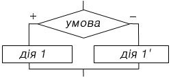
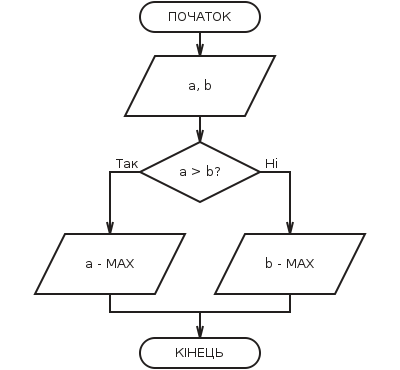

Розгалуження - керуюча структура, що організує виконання лише одну з двох визначених дій залежно від справедливості певної умови.
Умова - питання, що має два варіанти відповіді: так чи ні.

Знаходження найбільшого з двох чисел (малюнок з додатку):
